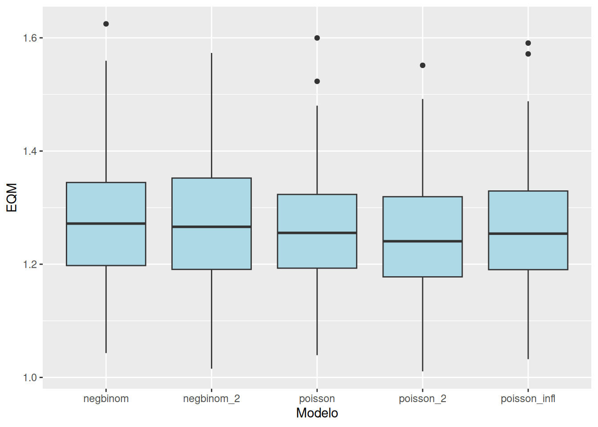
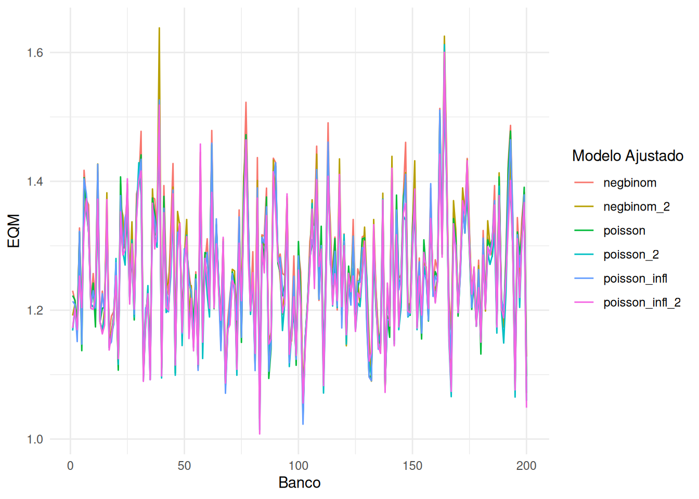
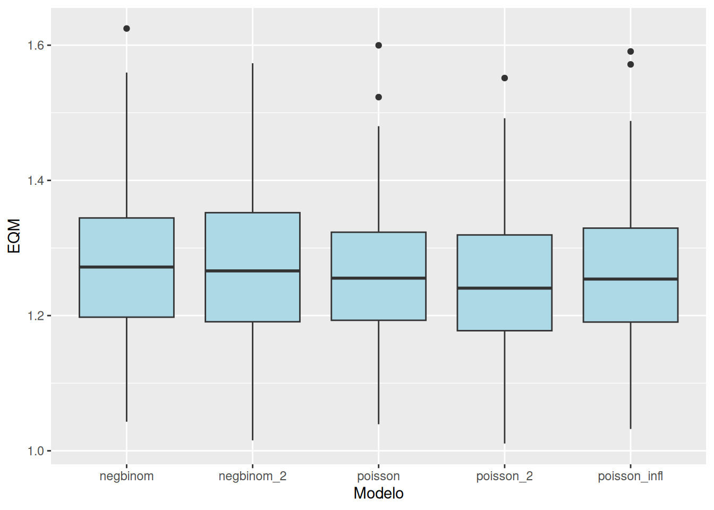
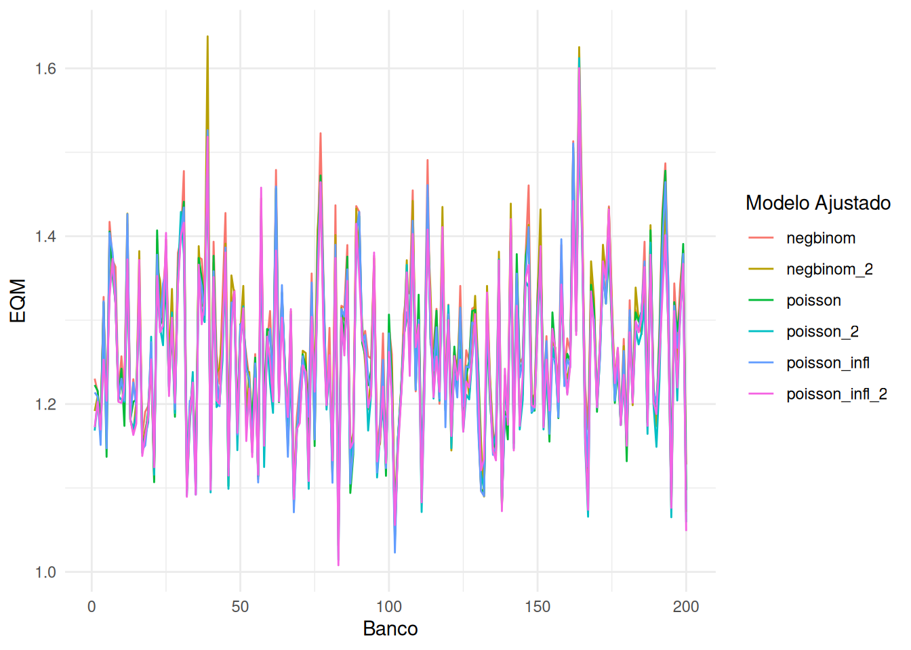
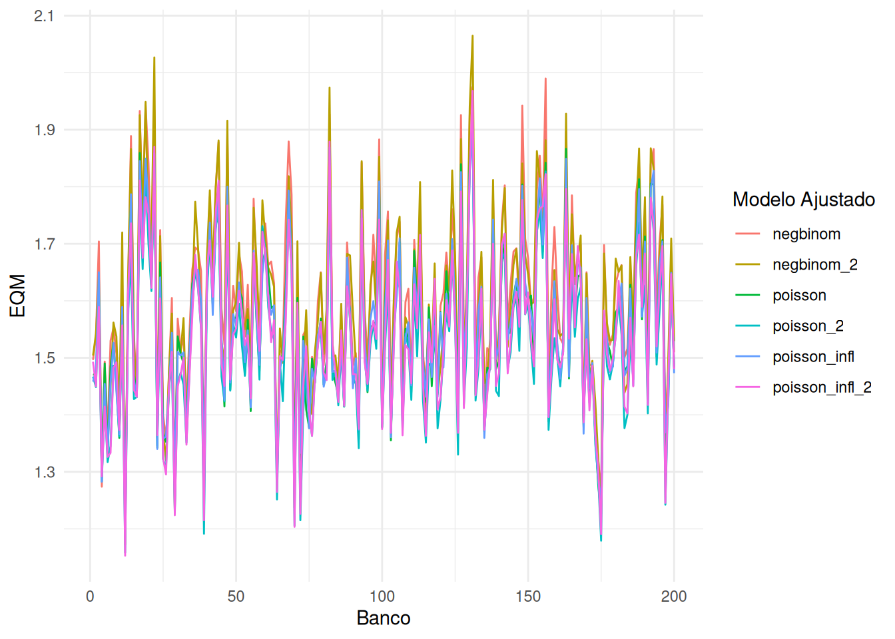

| negbinom_2 | negbinom | poisson_2 | poisson_infl_2 | poisson_infl | poisson | |
|---|---|---|---|---|---|---|
| LOO-CV | 0.025 | 0.070 | 0.040 | 0.04 | 0.160 | 0.665 |
| WAIC | 0.025 | 0.070 | 0.045 | 0.04 | 0.155 | 0.665 |
| MSE | 0.065 | 0.025 | 0.330 | 0.23 | 0.145 | 0.205 |
| RRMSE | 0.010 | 0.005 | 0.320 | 0.15 | 0.165 | 0.350 |


| negbinom_2 | negbinom | poisson_2 | poisson_infl_2 | poisson_infl | poisson | |
|---|---|---|---|---|---|---|
| LOO-CV | 0.025 | 0.070 | 0.040 | 0.04 | 0.160 | 0.665 |
| WAIC | 0.025 | 0.070 | 0.045 | 0.04 | 0.155 | 0.665 |
| MSE | 0.065 | 0.025 | 0.330 | 0.23 | 0.145 | 0.205 |
| RRMSE | 0.010 | 0.005 | 0.320 | 0.15 | 0.165 | 0.350 |


| negbinom_2 | negbinom | poisson_2 | poisson_infl_2 | poisson_infl | poisson | |
|---|---|---|---|---|---|---|
| LOO-CV | 0.100 | 0.840 | 0.00 | 0.005 | 0.055 | 0.000 |
| WAIC | 0.115 | 0.825 | 0.00 | 0.005 | 0.050 | 0.005 |
| MSE | 0.005 | 0.000 | 0.61 | 0.205 | 0.050 | 0.130 |
| RRMSE | 0.005 | 0.000 | 0.52 | 0.075 | 0.045 | 0.355 |


| negbinom_2 | negbinom | poisson_2 | poisson_infl_2 | poisson_infl | poisson | |
|---|---|---|---|---|---|---|
| LOO-CV | 0.000 | 0.010 | 0.000 | 0.205 | 0.785 | 0.000 |
| WAIC | 0.005 | 0.005 | 0.000 | 0.220 | 0.770 | 0.000 |
| MSE | 0.000 | 0.000 | 0.845 | 0.000 | 0.000 | 0.155 |
| RRMSE | 0.000 | 0.000 | 0.435 | 0.000 | 0.000 | 0.565 |

| negbinom_2 | negbinom | poisson_2 | poisson_infl_2 | poisson_infl | poisson | |
|---|---|---|---|---|---|---|
| LOO-CV | 0.135 | 0 | 0.655 | 0.210 | 0.00 | 0.000 |
| WAIC | 0.135 | 0 | 0.665 | 0.200 | 0.00 | 0.000 |
| MSE | 0.070 | 0 | 0.525 | 0.405 | 0.00 | 0.000 |
| RRMSE | 0.000 | 0 | 0.620 | 0.345 | 0.01 | 0.025 |

| negbinom_2 | negbinom | poisson_2 | poisson_infl_2 | poisson_infl | poisson | |
|---|---|---|---|---|---|---|
| LOO-CV | 0.865 | 0.040 | 0.020 | 0.065 | 0.010 | 0.00 |
| WAIC | 0.870 | 0.035 | 0.020 | 0.065 | 0.010 | 0.00 |
| MSE | 0.005 | 0.000 | 0.675 | 0.315 | 0.005 | 0.00 |
| RRMSE | 0.000 | 0.000 | 0.795 | 0.190 | 0.005 | 0.01 |

| negbinom_2 | negbinom | poisson_2 | poisson_infl_2 | poisson_infl | poisson | |
|---|---|---|---|---|---|---|
| LOO-CV | 0.005 | 0.005 | 0.000 | 0.980 | 0.01 | 0.000 |
| WAIC | 0.010 | 0.000 | 0.000 | 0.980 | 0.01 | 0.000 |
| MSE | 0.000 | 0.000 | 0.985 | 0.000 | 0.00 | 0.015 |
| RRMSE | 0.000 | 0.000 | 0.915 | 0.005 | 0.00 | 0.080 |